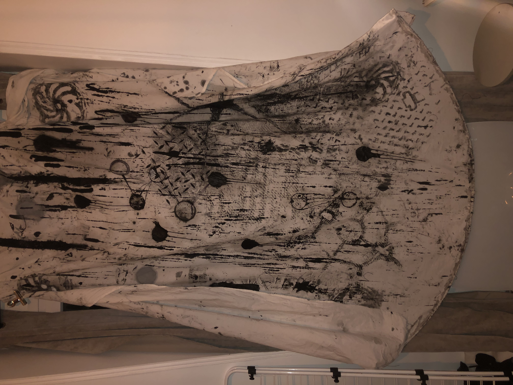
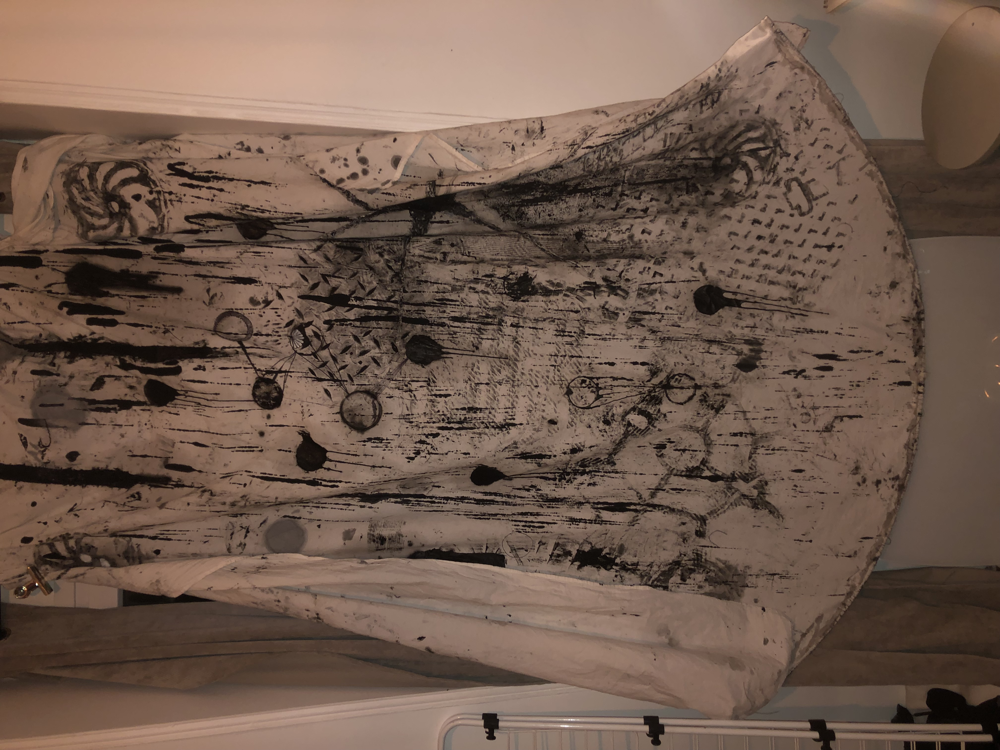

Ce travail de recherches personnelles sur les textures quotidiennes invisibles et sur la redécouverte de motifs se décrit en 3 moments. Le premier est d'apprendre à observer les rues, le sol, les murs, le materiel urbain pour pouvoir y percevoir des empreintes pertinentes. En deuxième, l'impression, en commençant avec les plaques d'égout et de l'encre de Chine, pour continuer sur sur les murs, poteaux, bancs, déchets, roues de véhicule, en quête du bon tampon. Ésthetiques, perturbantes, dégoutantes ou étonnantes, les impressions sont chacune différente par leur intensité, composition, tâches,...Un long travail d'essai est nécéssaire pour aboutir à des compositions satisfaisantes. La pluie peut aussi être un facteur important dans l'impression des structures, dillant l'encre ou la peinture avec l'eau et la saleté. En troisième et dernière étape, la digitalisation des empreintes apporte la possibilité de renforcer leur aspect de motif et de pouvoir les modifier pour atteindre un résultat final beau et hypnotisant. Les dessins apparents créent un ésthétique à part entière inspirant et stimulant. Ce processus ouvre de nouvelles perpectives de créations et apprend un nouveau chemin de travail, que ce soit par la pratique exterieure, la répétition fastidieuse des empreintes pour produire une composition pertinente, la vision précise et nouvelle que l'on développe ou la simple de recherche des outils convenables pour chaque texture différente. Ci-dessus, c'est la première pratique de ce processus, sur 23 pages d'un petit carnet de croquis .
 
